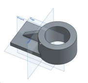

Week4
課程內容 :
學習使用 Onshape，並簡單繪製圖形，熟悉操作方法。
學習要點 :
- 建立 Onshape 帳號 - 請利用學校 gmail 建立教育版帳號
- 3D 環境導航 (navigate)
- 說明基於草圖 (sketch-based)的建模
- 介紹 4 個基本特徵 (features)（擠出(extrude)，旋轉(revolve)，掃描(sweep)，和斷面混成(loaf)）
- 從 2D 過渡到 3D
- 介紹基本草圖
- 附錄A：鍵盤快捷鍵 (keyboard shotcuts)，滑鼠和觸控平面手勢 (touchpad gestures)，檢視工具
- 附錄B：導航說明檔，建立帳號，訂閱計劃 (subscription plans)
- 圓柱薄殼 (cylinder shell) - 繪圖界面與可視化/檢視的介紹
- 針對既有草圖的模型 - 接續建立特徵
- 現存公用模型 (public models) - 如何搜尋並復製到工作區 (workspace)
心得 :
這禮拜終於開始使用 Onshape 畫圖了，第一次看起來沒有很難，覺得比較不方便的大概就是不能自設快捷鍵，只能用它內定的 ( 或許是我沒找到 )，除此之外好像都還好，相信再過沒多久就會越來越得心應手。
Homework1


Week3 << Previous Next >> Week5